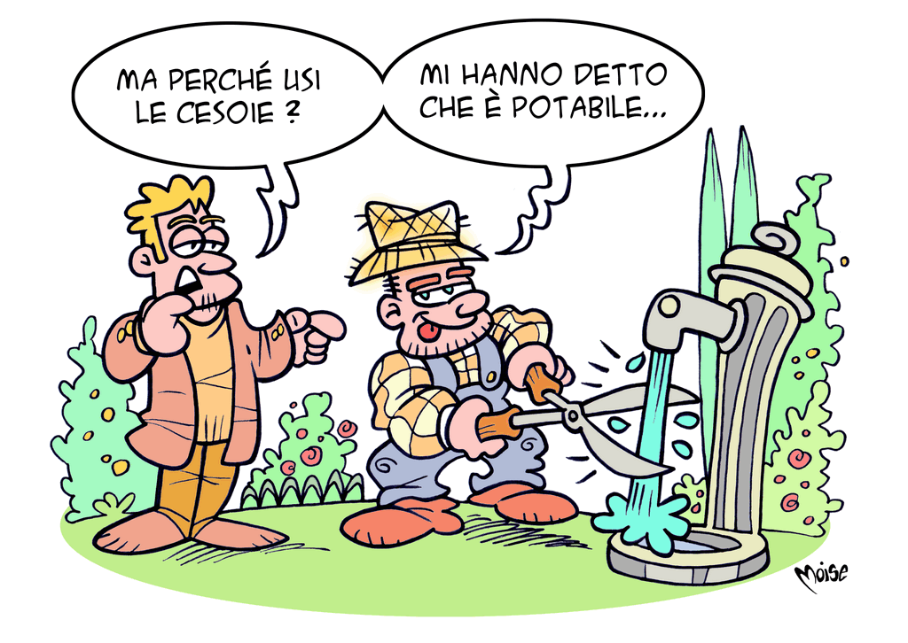

<!DOCTYPE html>  <!--Pittaluga Cambiaso Uboldi-->
<html>
	
	
<head>
   <link rel="stylesheet" type="text/css" href="./css/pannelli_acqua.css">
   <!--<meta name="viewport" content="width=device-width, initial-scale=1.0">-->
   <title> Dalla sorgente al rubinetto </title>
</head>
<body>
   <section style= "display: block" >
   <header>
      <!-- TODO Metter Style nel file esterno>
	<br><br><br>
	<h1 class="TitoloGrande"> Dalla sorgente<br/>al rubinetto</h1><br> <!-- TODO Cambiare il nome nel CSS>
	<center>
	   <br><br>
	</center>
     </div>
   <main>
   	<article>
	     Il <b>rubinetto</b> &egrave; uno dei dispositivi pi&ugrave; comuni e pi&ugrave; utili
	     della nostra abitazione, perch&egrave; intercetta e regola il
	     flusso dell&apos;acqua in qualsiasi momento e quantit&agrave;.
	     Pur essendo un oggetto comune, pochi sanno il perch&egrave;
	     di questo nome. <br>
	     Ti proponiamo <b>tre ipotesi</b>, una sola delle quali &egrave; corretta.
	     Tocca a te indovinare quale… 
	     <br><br>
	     <font color="#0053a1"> 1. </font> 
	     Deriva da <i><b>rubino</i></b>, la pietra preziosa, perch&egrave; i primi
	     rubinetti, in dotazione solo alle abitazioni delle famiglie
	     importanti e facoltose, erano sormontati da un
	     rubino o, pi&ugrave; 
	</article>
	<article>
		raramente, da altre pietre preziose;
		<br><br>
		<font color="#0053a1"> 2. </font> 
		Deriva da <i><b>Robin</i></b>, nome popolare del montone,
		perch&egrave; la parte superiore dei primi rubinetti aveva
		spesso la forma di una testa di ariete; <br><br>
		<font color="#0053a1"> 3. </font> 
		Deriva dal nome di Karl Heinz <i><b>Rubens</i></b>, fisico tedesco
		e inventore, nel XVI secolo, di un meccanismo che permetteva
		di gestire nelle abitazioni il flusso dell&apos;acqua.
	</article>
	  <div class="BloccoDiDestra" >
		 <br>
		 <a href="p01Soluzione.html">
		 
		 </a>
	  </div>
	  <div class="Loghi">
		<center>
		
		
		
		</center>
	  </div>
	  <footer id="foot">
		
	  </footer>
</body>
</html>
